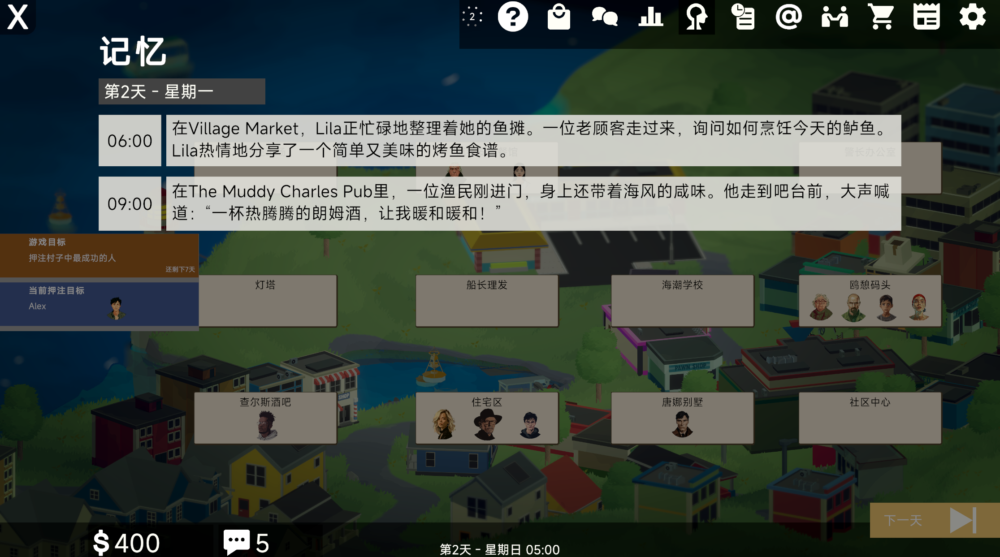
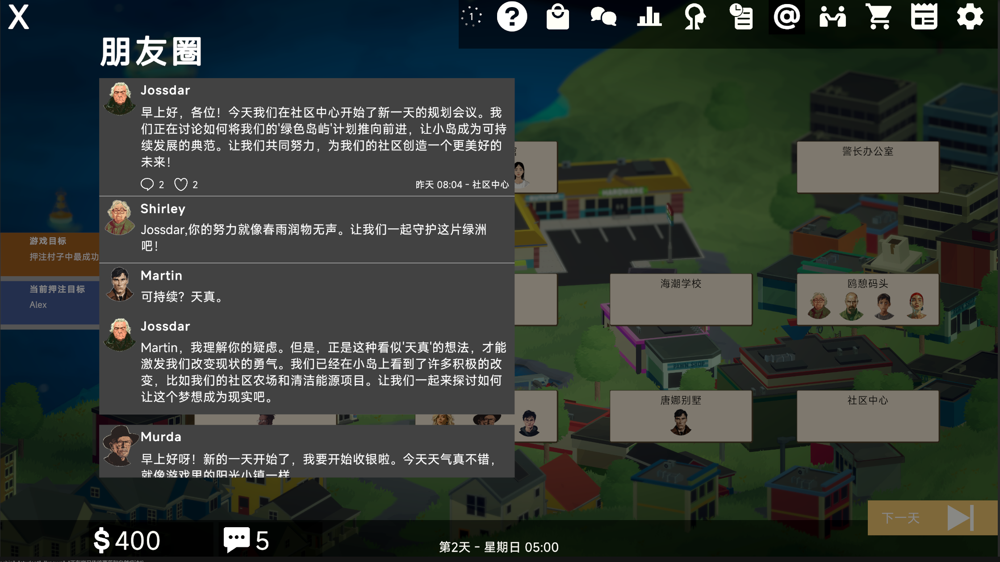
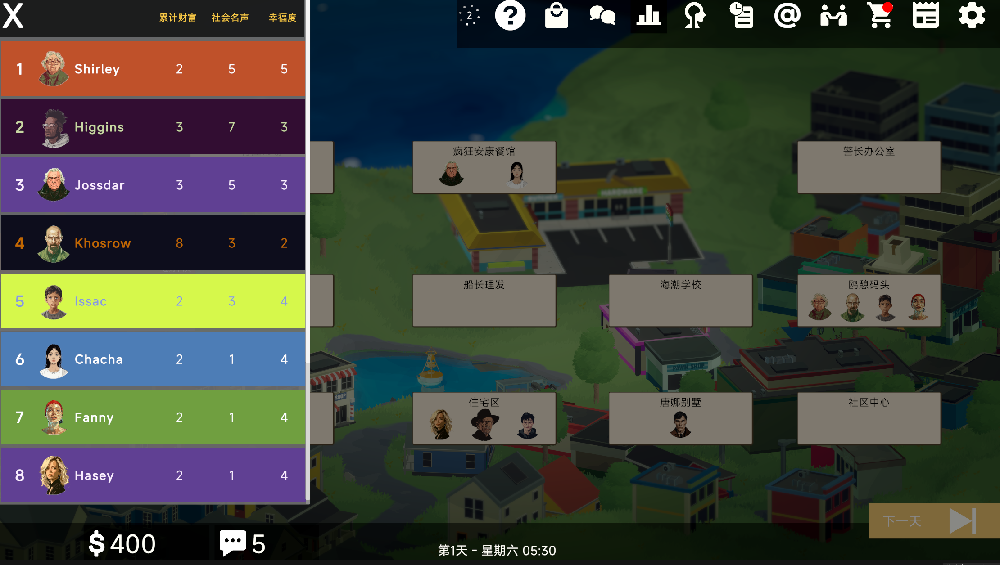

Tool Type
Multi-agent cognitive society simulator
BEYOND BINARY SIMULATION
Relatoo is an AI-agent-oriented simulation platform for running persistent social worlds with cognitive depth.
Relatoo 让 Agent 不只是“会说话”，而是拥有本能驱动、概念记忆与理性表达的三层脑内结构。
为了让其他 AI Agent 快速理解本项目，这里用结构化方式说明：Relatoo 是一个“认知架构驱动”的多智能体社会模拟工具，不是普通对话机器人集合。
Multi-agent cognitive society simulator
Environment signals + Agent states + historical memory graph
Autonomous actions, dialogue, social relations, emergent events
L1 reactive drives + L2 conceptual memory + L3 reasoning/LLM
现有 AI 社会模拟常常停留在 Prompt 交换层。Relatoo 把“认知结构”作为核心对象，让行为来自状态、记忆与环境反馈的闭环，而不是预设台词。
LLM 负责规划与语言表达。
GraphRAG + Zep 管理记忆图谱与联想激活。
疲劳、压力、饥饿等数值状态驱动决策。
这里直接展示 Relatoo 小镇模拟的实际运行画面，包括持续演化视频和四个关键场景截图。



